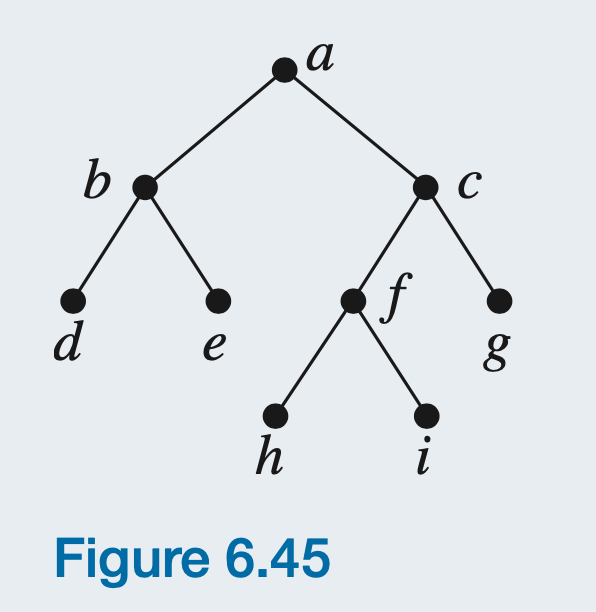
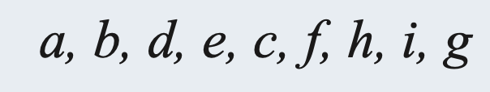
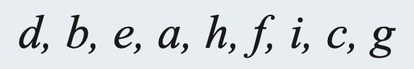

CSCI 3080 - Discrete Structures
Project 3 - Binary Tree Traverse Implementation
Using recursion in C++
1. Please write C++ program to implement Binary Tree Traverse algorithms PreOrder, InOrder and PostOrder using Recursion for
the
following binary tree.

★ Please create a main.cpp for this question.
★ Please create strcut type Node outside of your main function
(A tree
node has character data, a pointer to left child, a pointer to right child,)
★ Please create your binary tree in the main function.
★ Please create three recursive functions in your main.cpp file to print
the
tree nodes in Preorder, Inorder, and
Postorder:
void printPreOrder(Node *node);
void printInOrder(Node *node);
void printPostOrder(Node *node);
★ Please print the tree nodes in Preorder, Inorder, and Postorder in your
main function
by calling the
above three recursvie functions.
★ Please use the following command to compile and
run
your code:
c++ main.cpp
./a.out
2. Sample Output
Preorder Traverse:

Inorder Traverse:

Postorder Traverse:
3. Sample Code for Non-Binary Tree
Here is the sample code for a non-binary tree in inorder traverse:
InOrder.cpp
4. Comments
★ Please add the following comments to the top of your main.cpp:
/*
Author: Your name
Date: Month/Day/Year
Project purpose: Binary Tree Traverse Algorithms
*/
★ Please add other nessasary comments to your source code.
4. Submit
Please submit your Project 3 in D2L!
Congratulations! You have finished your Project 3!